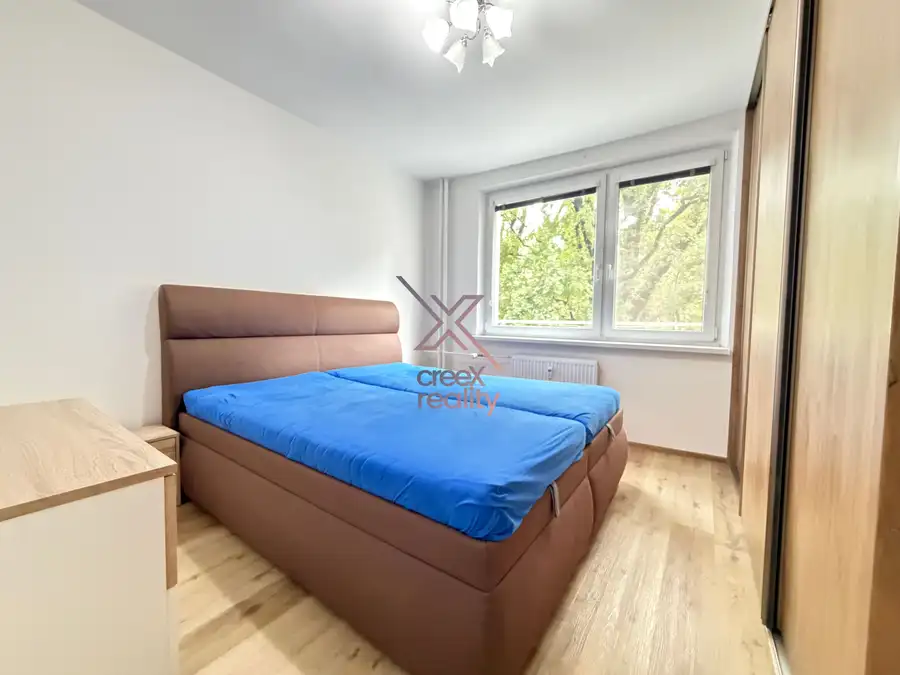
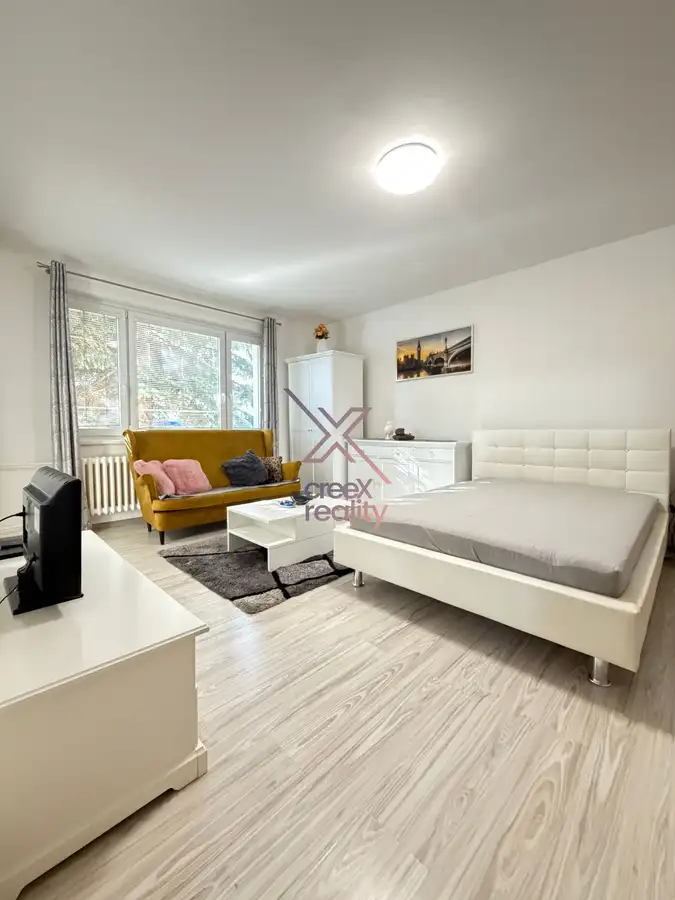
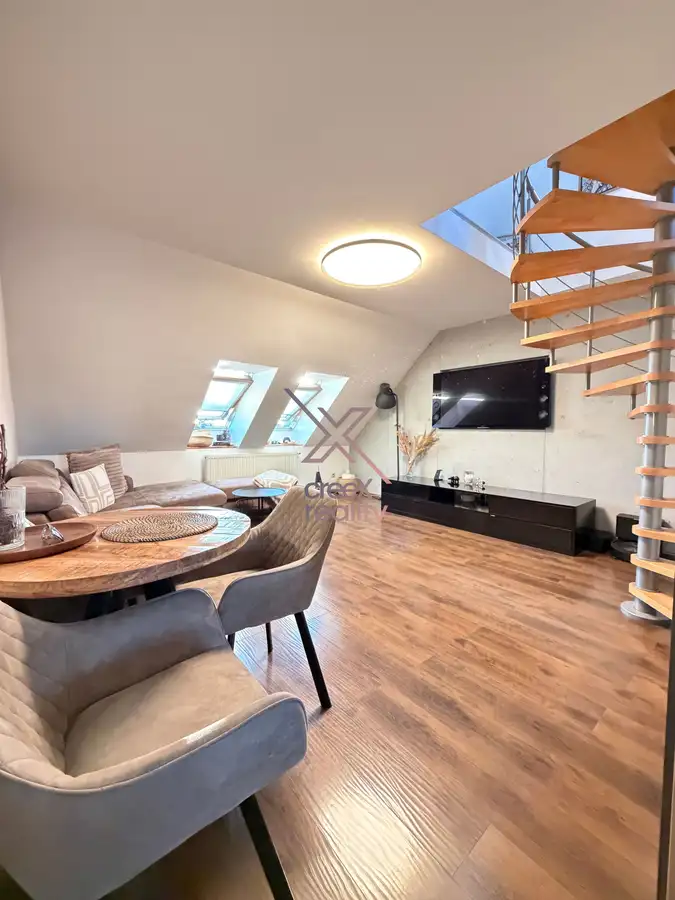
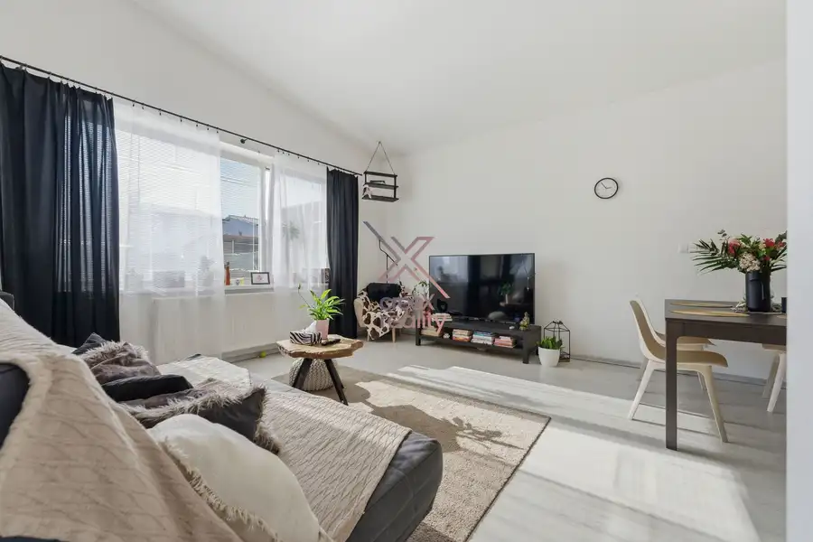

Aktuálna ponuka
Nehnuteľnosti, ktoré ponúkam
7 nehnuteľností na predaj a prenájom. Vyberte typ, alebo napíšte lokalitu.
7 z 7 ponúk
 DomNové10
295 000 €CreeX reality - novostavba 4-izbového bungalovu v Jaslovských Bohuniciach – pozemok 700 m²
Jaslovské Bohunice
102 m²
NOVOSTAVBA 4-IZBOVÉHO BUNGALOVU V JASLOVSKÝCH BOHUNICIACH – 102 m² + POZEMOK 700 m²CreeX Reality ponúka na predaj novostavbu moderného 4-izbového…
DomNové10
295 000 €CreeX reality - novostavba 4-izbového bungalovu v Jaslovských Bohuniciach – pozemok 700 m²
Jaslovské Bohunice
102 m²
NOVOSTAVBA 4-IZBOVÉHO BUNGALOVU V JASLOVSKÝCH BOHUNICIACH – 102 m² + POZEMOK 700 m²CreeX Reality ponúka na predaj novostavbu moderného 4-izbového…
 Komerčné priestory4
27 000 €CreeX reality - Nová cena - garáž v širšom centre Trnavy – SpiegelSál | elektrina | 17 m²
Trnava
17 m²
GARÁŽ V ŠIRŠOM CENTRE TRNAVY – SPIEGELSÁL | ELEKTRINA | 17 m²Popis nehnuteľnostiCREEX REALITY Vám ponúka na predaj garáž nachádzajúcu sa vo…
Komerčné priestory4
27 000 €CreeX reality - Nová cena - garáž v širšom centre Trnavy – SpiegelSál | elektrina | 17 m²
Trnava
17 m²
GARÁŽ V ŠIRŠOM CENTRE TRNAVY – SPIEGELSÁL | ELEKTRINA | 17 m²Popis nehnuteľnostiCREEX REALITY Vám ponúka na predaj garáž nachádzajúcu sa vo…
 Dom10
244 000 €CREEX reality Vám ponúka na predaj moderný 4-izbový rodinný dom v obci Smolenice
Smolenice
110 m²
CREEX REALITY Vám ponúka na predaj moderný 4-izbový rodinný dom v obci Smolenice, ktorá patrí medzi vyhľadávané lokality na úpätí Malých Karpát. Táto…
Dom10
244 000 €CREEX reality Vám ponúka na predaj moderný 4-izbový rodinný dom v obci Smolenice
Smolenice
110 m²
CREEX REALITY Vám ponúka na predaj moderný 4-izbový rodinný dom v obci Smolenice, ktorá patrí medzi vyhľadávané lokality na úpätí Malých Karpát. Táto…

Byt10 226 000 €CreeX reality - 3-izbový byt po kompletnej rekonštrukcii na Hospodárskej ulici – len 2 minúty pešo do centra Trnavy Trnava 3-izbový70 m²2. podlažie 3-IZBOVÝ BYT PO KOMPLETNEJ REKONŠTRUKCII NA HOSPODÁRSKEJ ULICI – LEN 2 MINÚTY PEŠO DO CENTRA TRNAVYPopis nehnuteľnostiCreeX Reality a Michal Baran…
BytNové6 Cena dohodouCreeX reality - kompletne zrekonštruovaný 1-izbový byt na prenájom v Trnave – Vladimíra Clementisa Trnava 1-izbový37 m²1. podlažie KOMPLETNE ZREKONŠTRUOVANÝ 1-IZBOVÝ BYT NA PRENÁJOM V TRNAVE – VLADIMÍRA CLEMENTISACreeX Reality a Michal Baran ponúkajú na prenájom príjemný,…
BytNové10 Cena dohodouCreeX reality - 3-izbový mezonet v srdci Trnavy – 90 m², komfortné bývanie a parkovanie v stráženom areáli Trnava 3-izbový90 m²4. podlažie 3-IZBOVÝ MEZONET V SRDCI TRNAVY – 90 m², KOMFORTNÉ BÝVANIE A PARKOVANIE V STRÁŽENOM AREÁLIPopis nehnuteľnostiPonúkam na prenájom výnimočný 3-izbový…
DomRezervované10 299 000 €CreeX reality - ////// 4-izbový rodinný dom v Bielom Kostole – pripravený na okamžité bývanie Biely Kostol 105 m² CreeX Reality a Michal Baran Vám exkluzívne ponúkajú na predaj moderný 4-izbový rodinný dom v obľúbenej obci Biely Kostol, len pár minút od mesta…Tomuto výberu zatiaľ nezodpovedá žiadna ponuka. Napíšte mi, čo hľadáte.